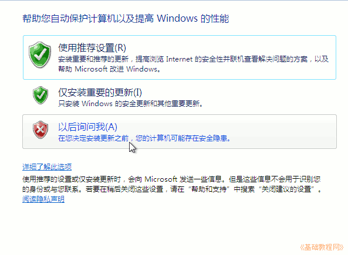
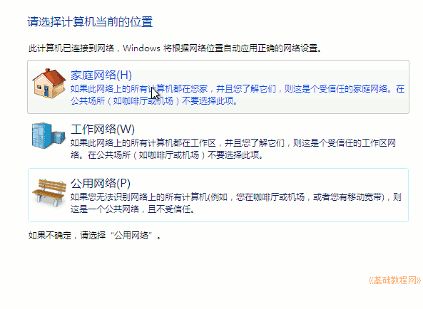

Windows7 安装基础入门教程
作者：TeliuTe 来源：基础教程网
Windows 7 安装、 返回目录 下一课Windows 7 的安装非常简单，只需少量操作即可完成；
1、安装 Windows 7
1）开机设置好从光盘启动，放入安装盘启动计算机，也可以开机的时候按 F2/F12 选择启动设备；
2）稍等出来安装对话框，点“下一步”继续；
3）然后点击中间的“现在安装”按钮；
4）在出来的许可协议对话框下边，打勾“我接受许可条款”，点“下一步”；
5）接下来的安装方式中，点击“自定义(高级)”继续；
6）在出来的硬盘选项中，点下边的“驱动器选项(高级)”；
7）如果是新硬盘，点击“新建”，或者选择准备好的分区，一般是选择 C：盘，有20G空间；
8）新建操作会在开头自动创建一个100M的分区，点“下一步”继续；
9）然后出现正在安装提示框，此时耐心等待即可；
10）自动重启后提示更新注册表；
2、用户信息
1）等待“完成安装”；
2）接下来是输入用户名和计算机名称，可以用中文拼音，要按一下回车中文才能进去；
3）密码先不设，也就是直接点“下一步”；
4）接下来要求输入序列号，也可以先忽略，点下一步跳过去，试用30天；
5）在出来的自动更新对话框中，点“以后询问我”；

6）在日期时间对话框，检查一下然后点“下一步”；
7）在出来的连接网络设置中，选择“家庭网络”；

8）稍等出来“欢迎”界面；
9）等一会就可以看到 Windows 7 的桌面了；
本节学习了安装 Windows 7 的基础知识，如果你成功地完成了练习，请继续学习下一课内容；
本教程由86团学校TeliuTe制作|著作权所有
基础教程网：>http://teliute.org/
美丽的校园……
转载和引用本站内容，请保留版权信息和本站链接。